Core Concepts
The donor portal#
Every self-service action a donor can take without phoning your office — and exactly what each one does to their giving. No account, no password, no login screen.
This page walks the portal as a donor experiences it. For the admin side — enabling panels, writing the request-link copy, publishing the site — see Publish a donor portal page.
Getting in#
There is no sign-up and no password. A donor asks for a link, the link arrives by email, and the token in that link is the credential. Links expire — three hours after they're issued by default, adjustable in Settings.
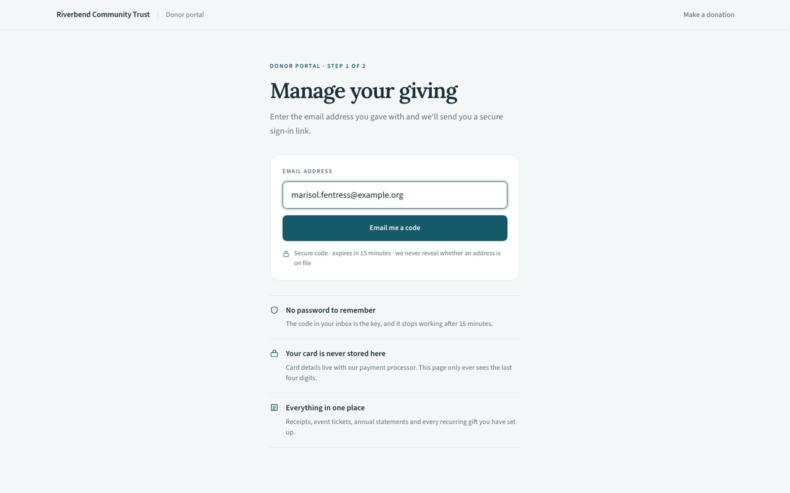
**What it shows.** The no-token landing page at `/donor`. One email field, one button, and the terms stated plainly underneath: the link expires in three hours, and we never reveal whether an address is on file. (The screenshot predates the current default of three hours and the wording is generated from your own **Donor portal link validity** setting, so what a donor actually reads is whatever you have configured.) The three blocks below it answer the question a first-time visitor actually has — *no password to remember*, *your card is never stored here*, *everything in one place*.
The same response either way
Submitting an address that isn't on file produces the identical confirmation screen as one that is. The portal never confirms or denies that someone is a donor — that would turn the form into a way to test whether a given person supports your organization.
The same holds for a donor who asks twice. Requests inside a five-minute window don't mint a new link — the confirmation screen still appears, but the link already in the donor's inbox keeps working. Without that, anyone who knew a donor's email address could invalidate every link the moment it was sent, simply by submitting the form again.
The dashboard#
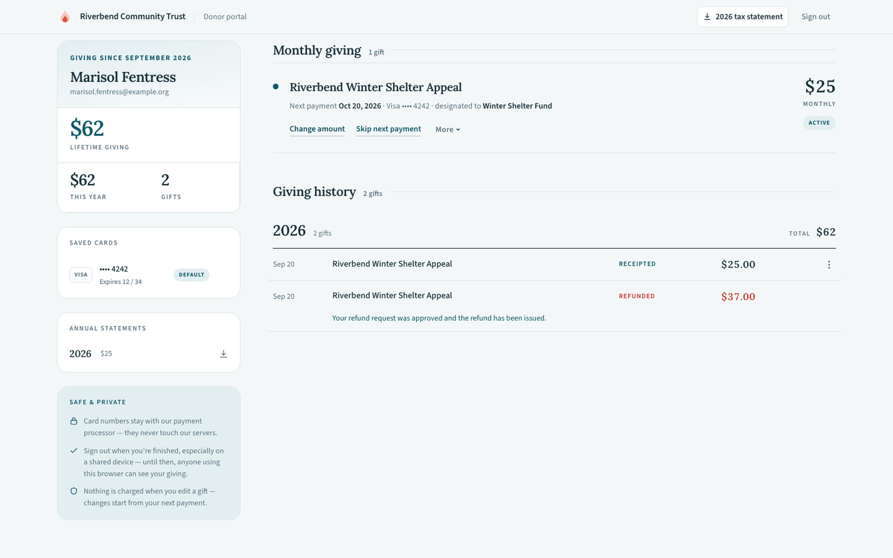
**What it shows.** The full dashboard for a donor with three recurring gifts, three saved cards, two events, and nineteen gifts across three years. The left rail carries identity and totals — lifetime giving, this year, gift count — a *Where it went* donut broken down by fund, saved cards, downloadable annual statements per year, and a trust block. The right column is the working area: monthly giving, events, and giving history.
The left rail is mostly summary. Two things there are actionable — the statement downloads and removing a saved card. Everything else a donor can change lives in the right column.
Each panel is independently switchable by an admin, so a smaller organization can run a portal that shows only giving history and receipts, with no recurring-gift management at all.
Where it went#
The donut is the donor's own giving by fund, net of refunds — the four largest funds by name, everything else rolled into "Other funds". It appears only once giving has actually been split across more than one fund; a donor who has only ever given to the general fund sees no chart rather than a single 100% slice. Percentages are rounded once, on the server, so the chart and its legend can never disagree with each other.
Saved cards#
Every card the donor has given with on this site is listed by brand, last four digits and expiry, with the default marked. There is no add a card button — a card joins the wallet by being used for a gift, which keeps card entry inside Stripe's own form where it belongs.
Each card carries a × that removes it. The confirmation states the consequences before the donor commits: the card stops being offered for new gifts here, past gifts and their receipts are untouched, a monthly gift paying with the card has to be moved to another card first, and saving it again next time they give is always possible.
A card funding a monthly gift cannot be removed
If any live recurring gift is still charging the card — active, paused, or one whose last payment failed — the removal is refused and the donor is told to change that gift's card first. A failed gift blocks for the obvious reason: a donor mid-dunning who removed the card would be left with nothing to fix. This is enforced on the server, not by hiding the button, so it holds however the request arrives. Use Change or update the card on the gift, then remove the old card. Cancelled and completed gifts never charge again and do not block.
Removal hides the card; it does not delete the record. Your team can still trace a refund on a gift paid with a card the donor has since removed, and the removal date is stored so support can answer when did this card disappear from my account? without guessing.
Monthly giving#
The recurring-gift panel is where the portal earns its keep. A gift row shows its amount, fund, status, and next payment date; an active pledge with an end date also shows a segmented progress rail — Payment 5 of 12 · pledge ends April 2027.
When a charge has failed, a banner sits above the whole panel rather than only on the affected row, because a donor scanning three gifts should not have to find the broken one.
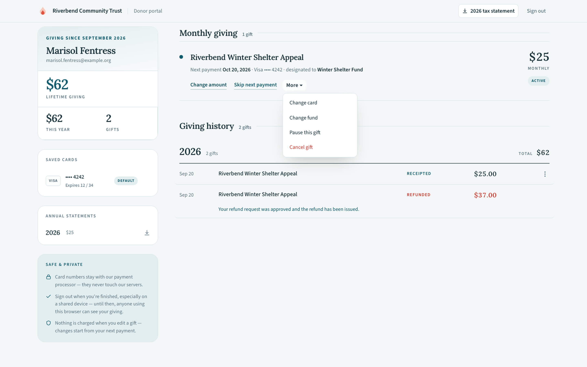
**What it shows.** Two or three actions sit inline on each row — the ones that fit that gift's state — and the rest live behind **More**: change card, change fund, pause, and cancel. Cancel is the only item styled in red.
Every action opens a confirmation dialog before anything changes, and each dialog is written to the same shape: an eyebrow saying what class of change this is, a one-line summary, then a short list of consequences marked with a tick (what stays the same), a cross (what stops), or an info mark (what happens next). The point is that a donor can tell what they are about to do without reading a paragraph.
Change the amount#
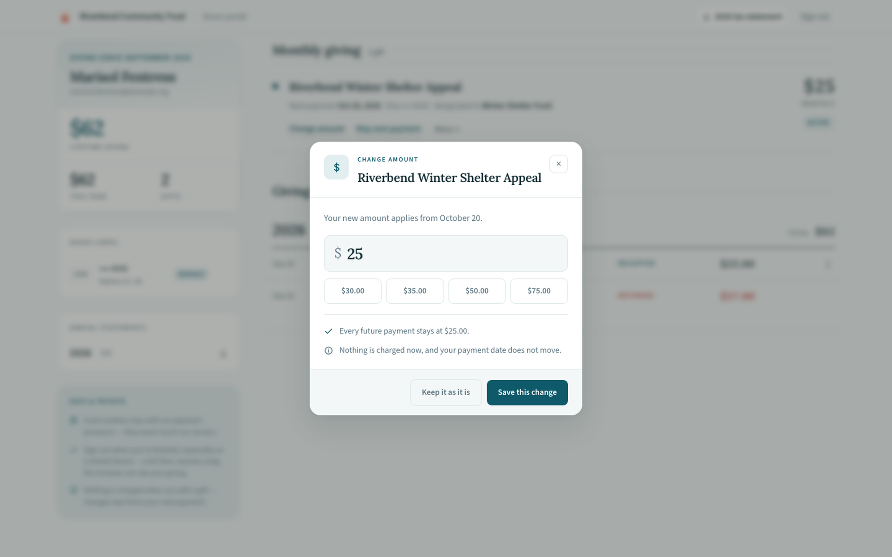
**What it shows.** The current amount in an editable field, four suggested amounts above it, and the two facts that matter — every future payment stays at the new figure, and nothing is charged now, so the payment date does not move.
The new amount applies from the next scheduled payment onward. Past gifts are untouched.
Skip the next payment#
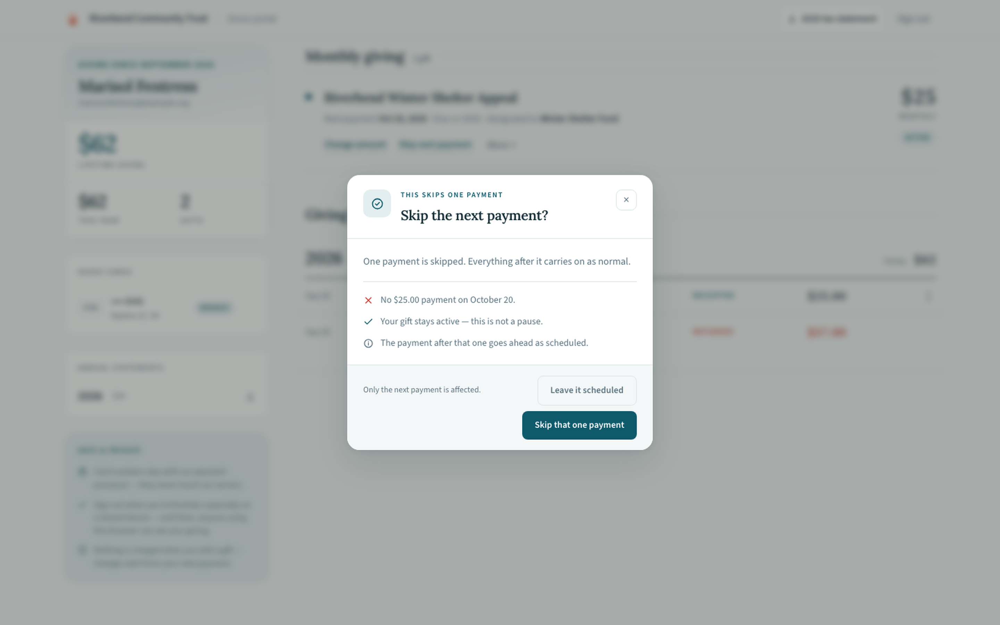
**What it shows.** A deliberately narrow action — the next payment on a named date does not happen, the gift stays active, and the payment after it goes ahead as scheduled. The footnote repeats the boundary: *only the next payment is affected*.
Skipping is not pausing. The distinction matters enough to state twice, because a donor who wanted one month off and accidentally pauses indefinitely is a lapsed donor nobody notices.
Pause and resume#
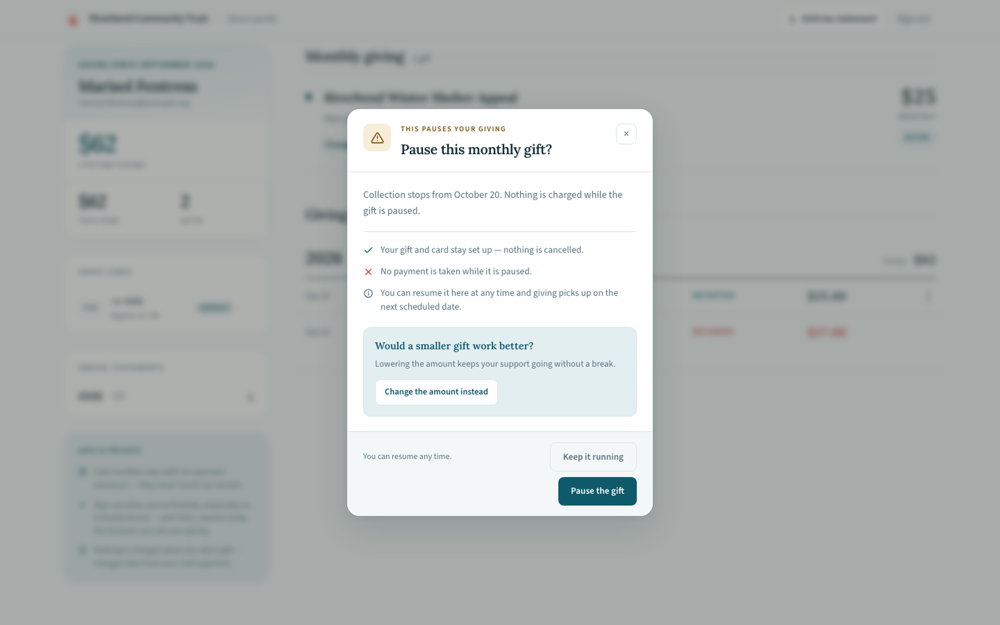
**What it shows.** Collection stops from a named date, the gift and card stay set up, and the donor can resume at any time. The green block is a save offer — *would a smaller gift work better?* — with a one-click route to the change-amount dialog instead.
A paused gift keeps everything: schedule, amount, fund, card. Resuming restores it exactly.
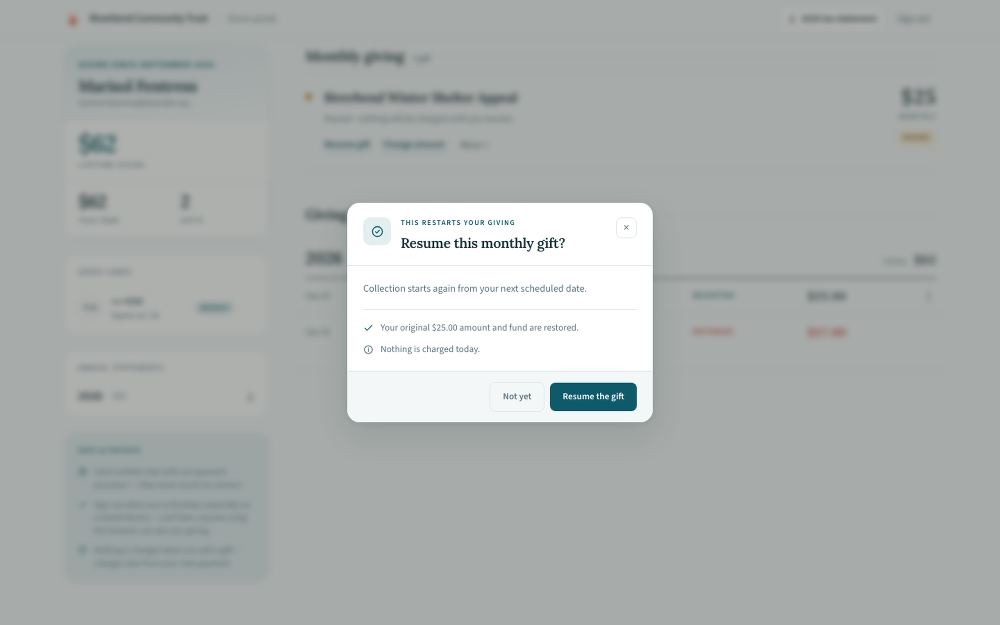
**What it shows.** The mirror of pause. Collection restarts from the next scheduled date, the original amount and fund are restored, and — the reassurance a donor wants before clicking — nothing is charged today.
Cancel#
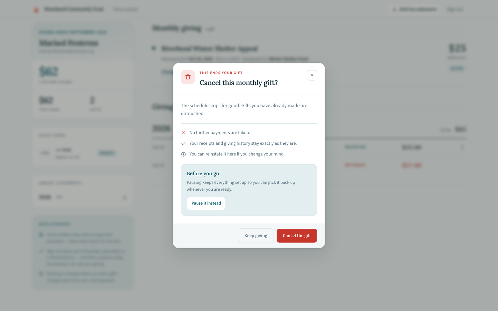
**What it shows.** The schedule stops for good, gifts already made are untouched, and receipts and giving history stay exactly as they are. A *before you go* block offers pausing instead, and the dialog closes by noting the gift can be reinstated later.
Cancelling ends the schedule; it never touches history. Every receipt the donor has already received remains valid and downloadable.
Change the fund#
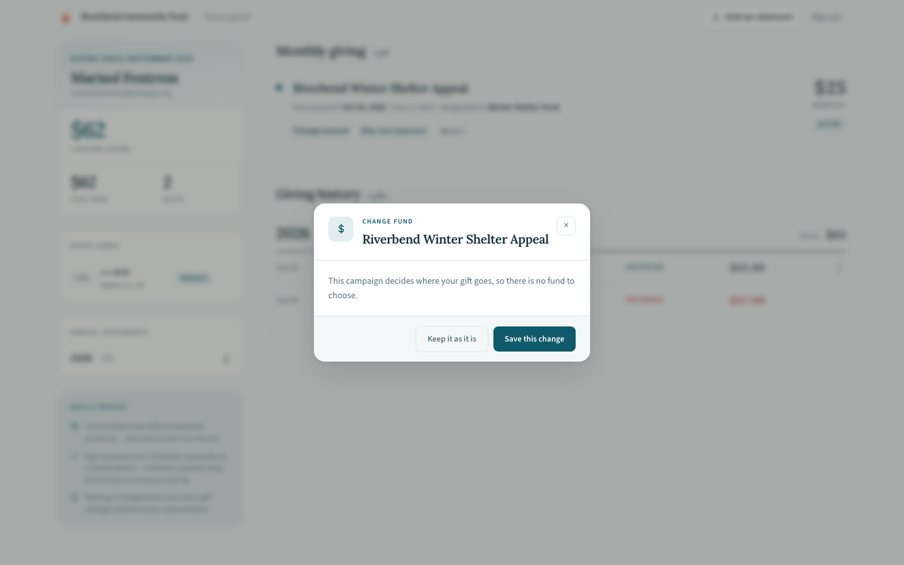
**What it shows.** The funds this campaign offers, as selectable rows with the current one ticked. Future payments move; the line underneath states the limit — gifts already made stay with the fund they were given to.
Only funds the gift's own campaign offers are listed. A donor cannot redirect a gift to a designation the appeal never advertised.
Change or update the card#
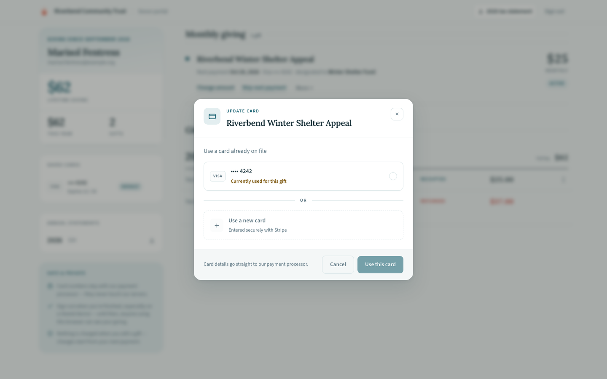
**What it shows.** Every card already on file, with the one currently charging this gift marked *Currently used for this gift*, plus a **Use a new card** route entered securely with Stripe. The checkbox at the bottom applies the choice to the donor's other recurring gifts in one step, and the footnote states where the details go: straight to the payment processor.
Switching between saved cards is instant. Adding a new one opens Stripe's own card entry — the number never reaches Salesforce, and this package stores only the processor's reference to it.
Retry a failed payment#
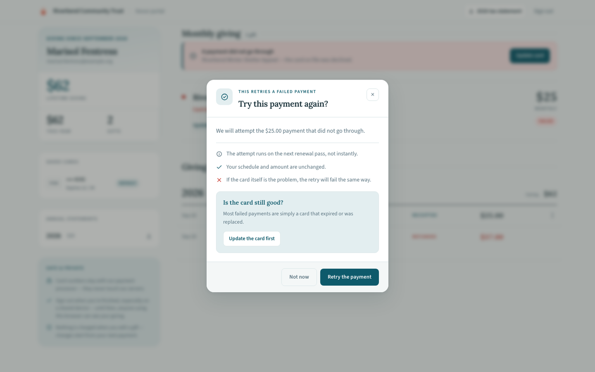
**What it shows.** The failed amount named explicitly, then three honest caveats — the attempt runs on the next renewal pass rather than instantly, the schedule and amount are unchanged, and if the card itself is the problem the retry will fail the same way. The green block routes to updating the card first.
Most failed payments are an expired or replaced card, not a declined one, which is why this dialog sends donors toward the card update rather than letting them retry the same dead card repeatedly.
Events and tickets#
Registered events appear in their own panel with ticket counts. View tickets opens the printable ticket page for an upcoming event; a past event offers its receipt instead. Tickets show the tier name and description, so a donor arriving at the door knows which table they bought.
See Events & ticketing for how tiers, seats, and the purchase pipeline work.
Asking your team for something#
Two panels do not change anything themselves. They put a request in front of a person and then show the donor where it got to. Both are built on the same queue — see Guest requests for what happens after the donor clicks.
Naming guests on a ticket order#
A buyer who skipped the guest-details step at checkout ends up with seats and no names on them. This panel is where they come back and fill those in, one row per empty seat, name and email together, grouped by tier so a fifty-seat table order does not arrive as one flat list.
Only blank seats appear. A name captured at checkout is never offered for overwriting here, so a donor cannot accidentally rename a colleague their office manager already registered.
Names do not appear the instant they are submitted. The panel says so plainly rather than showing a finished-looking screen that is not yet true.
Requesting a refund#
If you have turned on Let donors request a refund in Settings → Payments → Refunds, each eligible gift in the giving history carries a Request a refund button. It is always visible rather than appearing on hover, because a control a donor has to discover by accident is one your phone line finds out about instead.
The donor must say why. A refund request with no reason gives whoever reviews it nothing to work with, and the person best placed to explain is the one filling in the form.
Nothing is refunded by asking
The request is queued for a person, and the donor is told so on the screen and again by email. A member of your team issues the refund from the donation record, or turns the request down. There is no path by which a public page moves money.
Ineligible gifts never offer the option
A gift outside your refund window, already refunded, paid by something other than a card, or bought as an event ticket does not show the button at all — and the same check runs again on the server, so it holds however the request arrives. Ticket refunds are arranged by phone on purpose.
After submitting, the gift shows the request's status inline. If it was turned down, the reason your team recorded is shown in the same place.
Giving history and the annual statement#
History is grouped by year, each year showing its gift count and total, with receipts downloadable per gift. The header carries a tax statement button for the current year; the left rail lists every year the donor gave in, with its total, each independently downloadable.
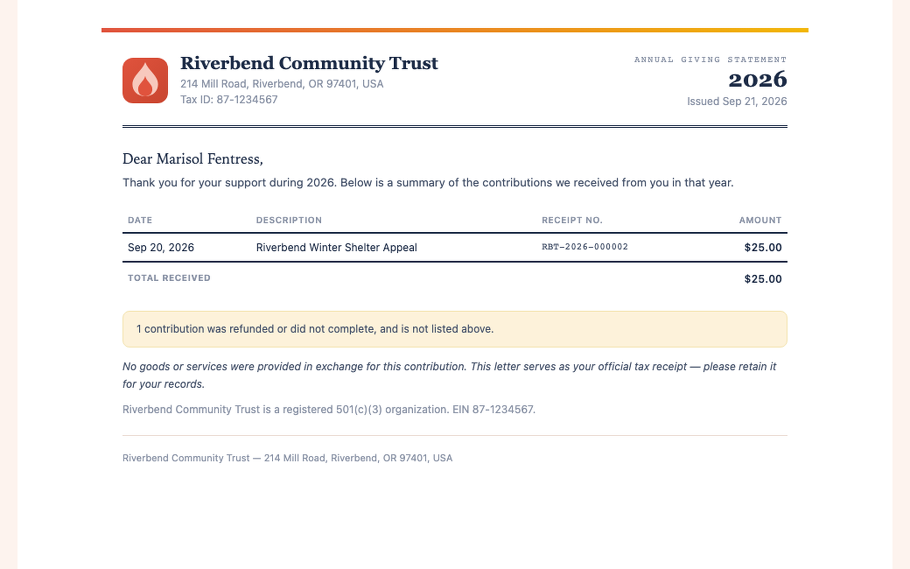
**What it shows.** A printed 2026 statement — organization name and tax ID, the year, the issue date, then every receiptable gift with its date, description, receipt number, amount, goods-or-services value, and deductible figure. Totals for the year follow, then a note that three contributions were refunded or did not complete and are excluded, the legal statement, and the tax-exempt footer.
Two of those rows are event orders, and they show the split that makes the document defensible: a $350 gala ticket lists $140 of goods received and $210 deductible, not $350. Plain gifts show a dash in the goods column and their full amount as deductible.
The legal statement follows the year's contents
A year containing any quid pro quo — a ticket, a registration, anything the donor received something in exchange for — prints the goods-provided wording. A year of plain gifts prints the no-goods wording. The choice is made from the gifts themselves, so a statement can never claim nothing was received in a year that included two gala seats. Both texts are editable in Settings → Receipts, and a receipt for a single gift and the annual statement covering it draw on the same text, so the two documents can never make different claims about one gift.
Produced on demand, never mailed
Nothing goes out in January. The donor prints their own statement whenever they want one, and your team can produce the identical document from a Contact or Account record page when a donor phones in. Only years the donor actually gave in are offered, so an empty statement is never produced.
What the portal deliberately cannot do#
The portal is scoped tightly, and some absences are decisions rather than gaps.
| Not available | Why |
|---|---|
| Editing name, email, or address | A public token-authorized page that can rewrite donor records is a data-integrity problem, not a convenience. Changes go through your staff. |
| Permanently deleting a saved card | Removal hides the card from the donor's wallet but keeps the record, so refunds on gifts already paid with it stay traceable. |
| Seeing any other donor's data | The token addresses exactly one donor. It is not a record Id, and record Ids are never used to address these pages. |
| Making a new gift | The portal manages existing giving. New gifts go through a campaign's donation page, where the appeal's own design and copy apply. |
Related#
-
Publish a donor portal page
Enabling panels, writing the copy, publishing the site.
-
Recurring giving
What is actually changing underneath a pause, skip, or card switch.
-
Donations & payments
Receipts, refunds, and how a gift reaches a deductible figure.
-
Events & ticketing
Tiers, seats, and the tickets the portal prints.